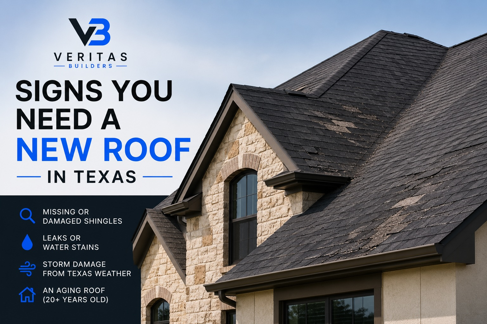
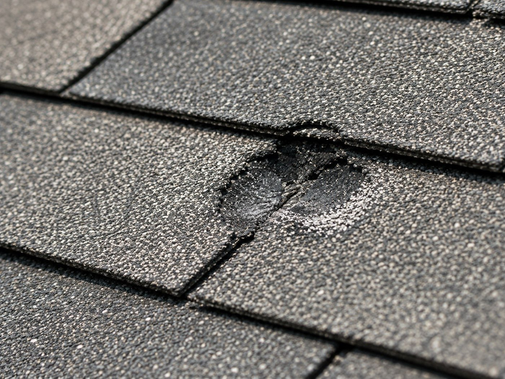

Blog · Guide · Published June 2026
Signs You Need a New Roof in Texas

Texas roofs take a beating — hail, wind, UV, heavy rain, and the occasional hurricane. Here are the eight clearest signs your roof is past repair and into replacement territory, what hail damage actually looks like up close, and how to handle the insurance side without getting steamrolled.
8 signs you're looking at replacement, not repair
1. Age
Asphalt shingle roofs in the Houston climate typically last 18-25 years on a 3-tab, 25-30 on architectural shingles. If your roof is the original on a 20+ year-old home and you've never replaced it, age alone is a reason to start budgeting — the next storm will likely be the end of it.
2. Granules in the gutter
Shingles are coated in mineral granules that protect the asphalt from UV. As they age, granules wash off in heavy rain and pile up in gutters and at downspout outlets. A handful is normal. A noticeable pile after every storm means the shingles have lost their protective coating and the asphalt below is exposed — once that happens, the shingle is in the last 1-3 years of its life.
3. Curling, cupping, or buckling shingles
Healthy shingles lay flat. Shingles that curl at the corners, cup upward, or buckle in the middle of the field have lost their flexibility — they no longer seal the roof, and wind can lift them in a storm. Cupping is also a strong indicator of an attic ventilation problem, which a good roofer will address as part of the replacement.
4. Missing shingles
A storm took some shingles off and you can see the underlayment? That's a repair if it's a small area on a younger roof. If it happens every storm, or the rest of the roof looks fragile, it's time to replace before the next big one.
5. Visible sagging or dipping
Look at the ridge line of the roof from the street. It should be straight. A visible dip or sag means the decking underneath is rotting or the framing has shifted — often from years of small leaks softening the plywood. This is structural and beyond repair; it's tear-off, deck replacement, full reroof.
6. Leaks in multiple places, or leaks that come back
One leak in one spot is usually a flashing or boot issue and can be repaired. Leaks in two or more separate places, or a leak you've had "fixed" twice that keeps coming back, almost always means the underlayment is compromised across the whole roof. Patching is chasing the problem.
7. Daylight through the attic decking
Go into the attic in the daytime, turn off the light, and look up. If you can see pinholes of light, water can get through every one of them. This is end-of-life.
8. Hail damage from a recent storm
The big one in Texas. See the next section.
What hail damage actually looks like
Hail damage isn't always obvious from the ground. From above (or from a ladder), look for:
- Round dark spots on the shingles where the granules have been knocked off — usually 1/4" to 1" diameter
- Bruises — soft spots that feel spongy when pressed (the mat below the granules has been broken)
- Dings on metal flashing, vents, and gutters — if these are dented, the shingles took the same impact
- Dents in soft aluminum on outdoor AC units — a great indicator of what the roof saw
Insurance adjusters typically look for 8+ hail hits per 10x10 square of roof to call it a covered loss. Different insurance companies have different thresholds, but that's the rule of thumb.

How to handle insurance after a storm
- Document everything immediately. Photos of the roof from the ground, photos of any dented metal, photos of granules in the gutter or downspouts, photos of any interior damage.
- File the claim with your insurance. Don't wait — many policies have a 1-year deadline from the date of loss.
- Don't sign with a roofer before the adjuster comes. Storm chasers will knock on your door the next morning offering to "handle everything." Pause. The reputable ones will still be in business in two weeks; the bad ones won't.
- Get a roofer to walk the roof BEFORE the adjuster. A good roofer will mark up the damage with chalk so the adjuster can see everything. This dramatically increases the chance of a fair claim.
- Be at the adjuster meeting. Or have your roofer be there. Quiet adjusters who walk the roof alone tend to find less damage than adjusters who know there's another set of eyes on the work.
- Review the adjuster's scope. If anything's missing — ridge cap, drip edge, valleys, vents — get your roofer to write up a supplemental and submit it.
Repair vs. replace — the rough rule
Repair if: the roof is under 15 years old, the damage is localized, and the rest of the roof is in good shape.
Replace if: the roof is over 18-20 years old, the damage spans multiple slopes, you've had repeat leaks, or insurance has classified it as a covered loss.
Need an honest look?
Veritas Builders offers free roof inspections across Greater Houston and Montgomery County. We'll climb the roof, photograph what we find, and tell you honestly whether it's a repair or a replacement — and if it's a covered insurance loss, we'll walk it with your adjuster.